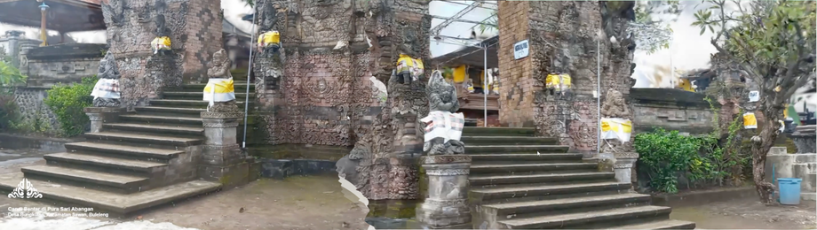
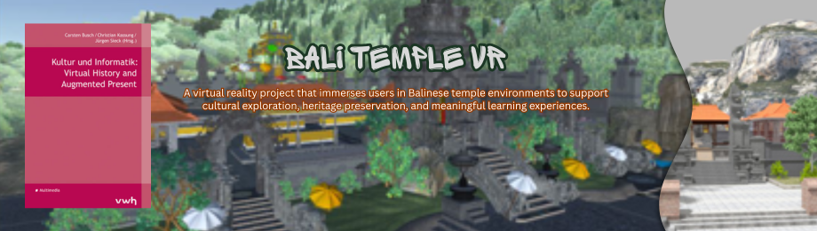
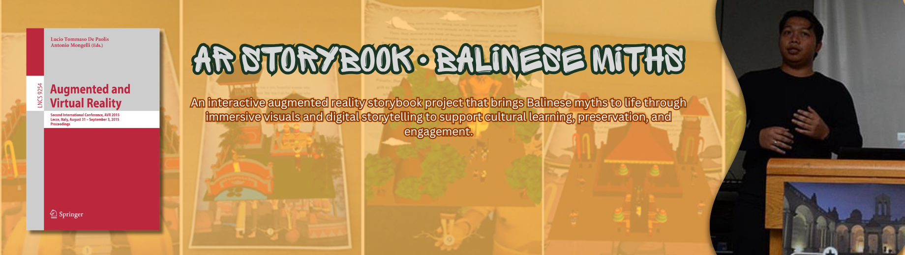
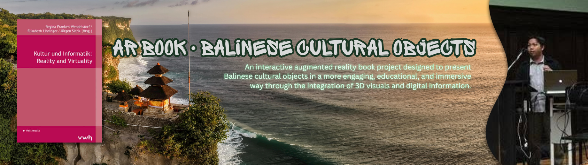

PhD Student · Monash University · Lecturer · Undiksha
Researcher and lecturer in computer science specialising in augmented & virtual reality, digital cultural heritage preservation, and technology-enhanced learning. Currently pursuing a PhD at Monash University, Australia.
About
I am a PhD student in the Faculty of Information Technology at Monash University, Australia, and a lecturer in the Informatics Department at Universitas Pendidikan Ganesha (Undiksha), Singaraja, Bali, Indonesia, where I have taught since 2010.
My research lies at the intersection of extended reality (XR), digital cultural heritage, and technology-enhanced learning. I am particularly passionate about using augmented and virtual reality to document and preserve Balinese cultural heritage — from ancient temples to traditional scripts and oral legends.
I am also the Founder & CIO of CV. Ganesha Inovasi Teknologi and serve as Research & Community Service Coordinator for APTIKOM Bali. I have authored and co-authored books on data mining and C# programming, and hold multiple intellectual property registrations in Indonesia.
Key Publications & Books

We present a novel application of 3D Gaussian Splatting (3DGS) for the large-scale archival of thousands of temples in Bali. Our project, the Bali Digital Heritage Initiative, adopts a participatory approach in which local communities collect video footage of vulnerable temples, which we transform into 3DGS scenes to serve as digital archives.
Citation
Wilson, A., Murtiyoso, A., Jenny, B., Darmawiguna, I. G. M., Suputra, P. H., Chandler, T., Kesiman, M. W. A., & Satriadi, K. A. (2025). 3D Gaussian splatting for archival of Balinese temples from community-sourced videos. IEEE International Conference on Imaging Systems and Techniques, Strasbourg, France.

A virtual reality application to document Balinese temples as a form of cultural heritage. Users can take immersive virtual tours and experience the full landscape of temples and sacred objects inside, preserving them digitally for future generations.
Citation
Darmawiguna, I. G. M. , Pradnyana, G.A., Sindu, I., Karimawan, I.P.P.S. & Dwiasri, N.K.R.A. (2020). Bali Temple VR. Kultur und Informatik: Virtual History and Augmented Present, Lisbon, Portugal.

An AR storybook focusing on Balinese myths and legends, developed for Android using Unity3D and Vuforia. When the camera is pointed at an image marker, animated 3D scenes appear alongside narration and music — bridging traditional storytelling with emerging technology.
Citation
Darmawiguna, I.G.M., Kesiman, Sunarya, I.M.G., Arthana, K.R., Crisnapati, P.N. (2015). Lecture Notes in Computer Science, Vol. 9254, Springer-Verlag, pp. 71–88. SALENTOAVR, Lecce, Italy.

A collection of augmented reality applications showcasing Balinese artistic and cultural objects, developed as an educational tool to introduce younger generations to the richness of Balinese visual heritage through interactive mobile experiences.
Citation
Kesiman, M. W. A., Darmawiguna, I. G. M., Crisnapati, P. N., Ardipa, G. S., Mariyantoni, I. K. Y., Nugraha, M. L., Prasetya, A. Y. R. A., & Dewantara, I. M. A. Y. (2014). The AR Book Project: Collection of augmented reality application of Balinese artistic and cultural objects. In R. Franken-Wendelstorf, E. Lindinger, & J. Sieck (Eds.), Kultur und Informatik: Reality and Virtuality. Culture and Computer Science Conference, Berlin, pp. 93–105.
Darmawiguna, I. G. M., Kesiman, M. W. A., Crisnapati, P. N., Wiartika, I. M. E., Suparianta, K. D, Susena, I. K., Yudiantara, I. M. (2014). Augmented Reality for the Documentation of Cultural Heritage Building Modelling in Bali Indonesia. In R. Franken-Wendelstorf, E. Lindinger, & J. Sieck (Eds.), Kultur und Informatik: Reality and Virtuality. Culture and Computer Science Conference, Berlin, pp. 93–105.
Key Projects
Bali Digital Heritage Initiative (BADHI)
Empowering Balinese communities in preserving cultural heritage through responsible, sustainable, and collaborative digitisation — including 3D Gaussian Splatting of Balinese temples.
TEMPLES — AR for Balinese Temple Visitors
Augmented Reality system to build visitor awareness of sacred contextual information in Balinese temples — restricted areas, prohibited activities, and object interaction guidance.
SPBE Roadmap — Buleleng Regency
Developing the architecture document and roadmap for the Electronic-Based Government System (SPBE) of the Regional Government of Buleleng Regency, aligned with national standards.
Lont-AR
An augmented reality project that brings Balinese lontar manuscripts to life through interactive digital visualizations that support cultural learning, preservation, and engagement. Now, it becomes Ganesha Inovasi Teknologi Technology , a innovation start-up focused on delivering cutting-edge digital solutions for education, government, and creative industries in Bali and beyond.
Bali Temple VR
A virtual reality application for the digitalization of Balinese temples, allowing users to take virtual tours and experience temple landscapes and sacred objects immersively.
Augmented Reality Story Book
AR-based storybook focusing on Balinese myths and legends. Animated 3D scenes appear when the app is pointed at image markers, accompanied by narration and music.
Awards & Scholarships
Best Graduate — Professional Engineering Program
Udayana University, July 2024 Graduation
2nd Place — E-Learning Content Competition
Dies Natalis, Universitas Pendidikan Ganesha
Most Disciplined Lecturer
Department of Informatics Engineering Students, Undiksha
Gold Medal — Highest GPA in Computer Science
University of Mysore, India
ICCR Scholarship — Master's Degree
Indian Council for Cultural Relations, University of Mysore
Full Scholarship — Bachelor's Degree
President University, Cikarang, Indonesia
Full Scholarship — Senior High School
Taruna Nusantara Senior High School, Indonesia